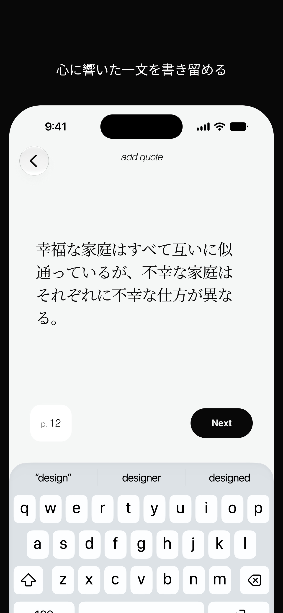
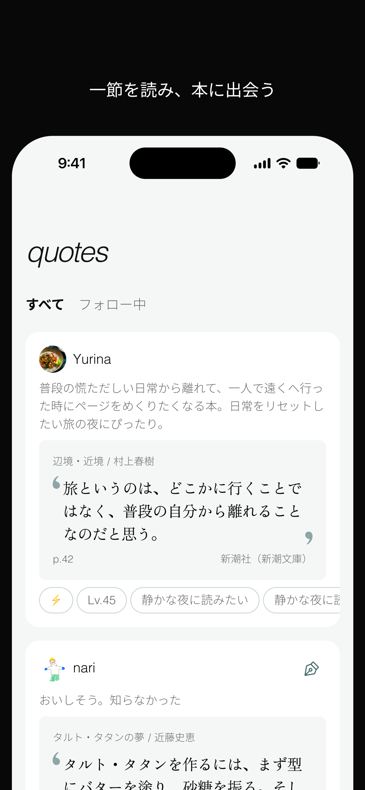
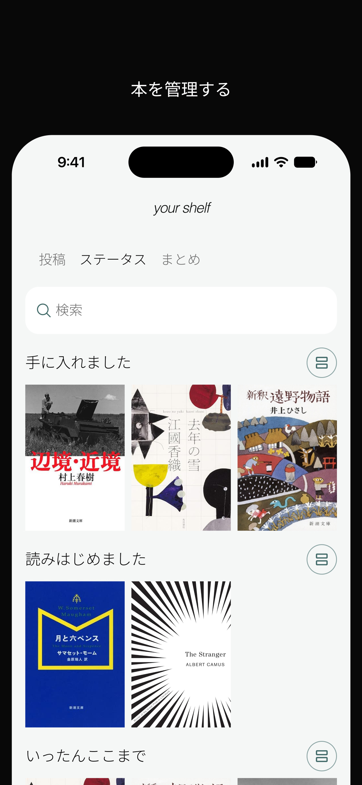
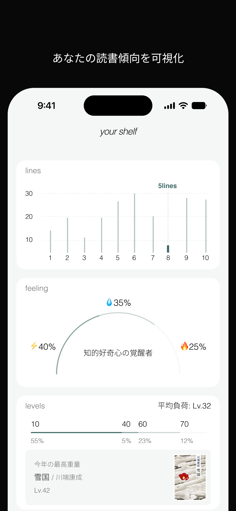

bq
ビー・キュー
心に刺さった一節を保存し、言葉の深さや感情から次の1冊と出会うためのアプリ。言葉を愛するすべての読書家へ。あなたに本当にぴったりな本を紹介してくれる、もう一人の友だちになりたいです。
App Store



心を突き動かした「一節」から、次の1冊と出会う
‘bq’は、本の中で出会った忘れられない言葉や名言を記録し、その「言葉の深さ」や「今の自分の感情・状態」に合わせて新しい本を見つけ出す、読書家のための選書ライブラリ・選書ノートアプリです。あらすじやベストセラー順の検索だけでは辿り着けない、あなたの心に本当に響く1冊との出会いを提供します。
心に刺さったフレーズの記録・保存
読書中に出会った脳天を撃ち抜かれるようなー節や、自分を救ってくれた言葉を引用ルールに則って美しく記録できます。
感情や難易度、気分から本を探す
「心が折れそうなとき」「静かに思索に耽りたい夜」など、今のあなたのコンディションや読書に求めたい深さ・難易度に合わせた本をインスピレーションから発見できます。
世界中の引用から広がる読書体験
他の読者が心を動かされたフレーズをきっかけに、知らなかった名著や純文学、思索書との思いがけない出会いを生み出します。
楽天ブックス連携でスムーズな詳細確認
気になった書籍はすぐに詳細情報や書影を確認し、スムーズにチェック・購入できます。
こんな人におすすめ
- 本の中で出会ったフレーズや引用を大切に書き留めておきたい
- あらすじやランキングではなく、「言葉」や「文章の雰囲気」で本を選びたい
- 自分のいまの気分や心の状態（救い、癒やし、思考の深さ）にぴったりの本を探している
- 読書記録を単なる「読了冊数の管理」ではなく「思考・フレーズのストック」にしたい
作った人
今後のアップデート予定
- 韓国と英語圏にローカライズしたい
- iPadでbqを使いたい
- 一冊の本あたり自分が引用したヒストリーを追いたい
- 電子やオーディオブックなど、どの媒体で読んだのかを記録したい
- 出版年代と背景となる時代でタグづけ、検索ができるようにしたい
- ホーム画面ウィジェットで簡単追加できるようにしたい
安心・安全にご利用いただくために
- 本アプリは著作権法第32条における「引用」の適法性を考慮した設計を行っております。
- 書籍情報の検索・取得およびアフィリエイトリンクには楽天ウェブサービス （RakutenDevelopers）を利用しています。
- アプリに関する不具合報告、ご意見は バグ報告フォーム またはサポートメール（support@moq-design.jp）よりご連絡お願いいたします。